| |
Overview of Editing Models |
| <<< Introduction To Model Editing | Chapters | Deleting Entities >>> |
Parasolid provides a range of functions that are known generically as local operations. These functions are used to modify specific sets of faces on the body (or perform local changes), rather than modify the body as a whole (or perform global changes). Local operations are usually performed on solid bodies.
This chapter describes features that are common to all local operations in Parasolid. The remainder of this volume describes all of Parasolid’s model editing functionality in detail. See Chapter 62, “Introduction To Model Editing”, for an overview.
|
Warning: In general, you should only use local operations on bodies that you know are manifold. Using local operations on general bodies (as described in Section 15.7, “General bodies”) is not supported, except where explicitly stated otherwise. |
This chapter contains the following information:
Many of the issues described in this chapter also apply to Parasolid’s hollowing, offsetting, and thickening functionality, which can operate on both a local and a global level. For more information on these areas of functionality, see Chapter 59, “Offsetting”, Chapter 60, “Hollowing”, and Chapter 61, “Thickening”.
|
Note: Many of the functions described in this volume can return detailed diagnostic information following any failure to complete an operation in the manner intended. This information is contained in the PK_local_status_t variable in the return arguments of the function, and is returned only when the return code from the function is PK_ERROR_no_errors. If an operation fails in this way, the model might be left in an invalid or corrupt state. We therefore recommend that, if the PK_local_status_t variable indicates a failure, you roll back to a valid state of the model. For more information, see Section 121.3, “Failure status codes”. |
This section introduces you to Parasolid’s functionality for editing faces in a model. Parasolid’s support for model editing is significant, and this section provides an overview of only the most common functionality.
There are many ways that existing faces in a body can be modified. This section introduces some of the dedicated functionality that Parasolid provides for performing such editing operations, and describes some of the topological changes to a body that Parasolid supports when using these operations.
You can use PK_FACE_transform_2 to apply transform operations to a set of faces in a single body. Amongst other options, this function lets you:
Transforming faces may alter the topology of a body in many different ways. Figure 63-1 shows a typical example in which translating the faces comprising a boss feature moves the boss into a different face, thereby changing the topology of the body.
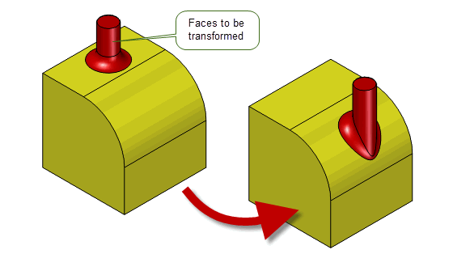Figure 63-1 Topological changes after a local transformation
See Section 71.2, “Transforming faces” for more information.
Offsetting is the process of modifying existing faces, such that the modified faces are offset from the originals by a specific distance at every point. Parasolid provides powerful and pervasive offsetting functionality that forms the basis of a number of other areas of functionality, such as hollowing and thickening. These functional areas are discussed in detail in Chapter 59, “Offsetting”, Chapter 60, “Hollowing”, and Chapter 61, “Thickening”.
During any operation based on offsetting functionality, if the offset distance is greater than the minimum radius of curvature of any surface being offset, then that surface becomes either wholly inside-out or self-intersecting.
If the surface is inside-out, Parasolid simply deletes the face. For example, blends whose radius are less than the offset distance are removed from the model. Figure 63-2 shows an example in which a blended body is hollowed using an offset that is greater than the radius of some of those blends: no corresponding blend faces are present in the interior of the resulting hollowed body.
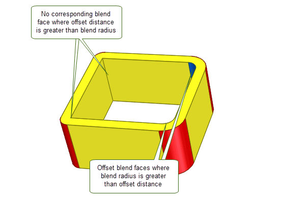Figure 63-2 Hollowed body where the blend around the top face is not present in the interior shell
If the offset surface becomes self-intersecting, the situation is more complicated.
Figure 63-3 New edges replace self-intersections
Parasolid offers the ability to taper (or draft) specific faces in a body, or to taper entire bodies in one operation, for the purpose of creating moulds. This functionality is described in detail in Chapter 67, “Face Tapering”.
Often, tapering a cylindrical or conical face requires the kind of topology change illustrated in Figure 63-4.
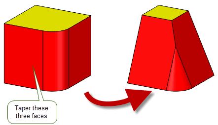Figure 63-4 Topological changes resulting from tapering operation
You can replace the surface of a specified face using PK_FACE_replace_surfs_3. This function is flexible enough to allow you to replace just the surface of a single face, or replace the surfaces of several faces in one operation. See Chapter 66, “Replacing The Surfaces Of Faces” for complete information.
If you want to replace faces that already exist in a body, Parasolid provides the function PK_FACE_replace_with_sheet. This function lets you replace an arbitary set of connected faces in a target body with a replacement set of faces from a sheet tool. See Section 69.1, “Introduction”, for complete information.
You can perform local deformation of a set of target faces in a body, by calling an evaluator function defined in your own application code. This powerful functionality allows you to perform sophisticated manipulations to a body while retaining the ability to automatically handle topology changes to the body.
Parasolid does not offer a dedicated API for performing this operation; instead, it can be achieved as one of the operations available in PK_FACE_change. See Section 63.2.4, “Generic face editing”.
If you want certain faces in a body to remain offset from other faces during editing operations, then you can do this by specifying the original (pre-offset) faces as reference faces. Parasolid then ensures that any faces offset from the reference faces continue to be offset by the same distance after the editing operation has completed.
Parasolid does not offer a dedicated API for performing this operation; instead, it can be achieved as one of the operations available in PK_FACE_change, which is introduced in Section 63.2.4, “Generic face editing”.
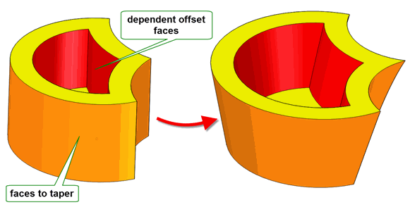Figure 63-5 Creating dependent offsets by specifying offset reference faces
If the model you are editing contains blend faces, Parasolid automatically recalculates those blends as part of any model editing operation. In addition, if you want to edit an existing blend (say, by changing the blend radius), Parasolid automatically recalculates the surrounding topology.
Parasolid does not offer a dedicated API for performing reblend operations; instead, it can be achieved as one of the operations available in PK_FACE_change. See Section 63.2.4, “Generic face editing”.
Figure 63-6 shows an example that illustrates both these types of reblending. After the radius of the blue blend face has been increased, the configuration of the red faces needs to be altered. In particular, Parasolid automatically reapplies the red blend face to take account of the new surrounding topology. Note that the red faces have not been translated during the operation (i.e., the boss feature has not moved).
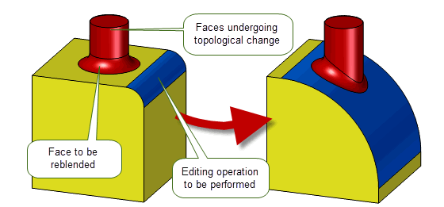Figure 63-6 Topological changes after a blend has been reapplied
You can create new entities on a model by spinning or sweeping existing entities from the model. For example, if you have a number of imprinted edges on a body, you can create a boss or a pocket on the body by spinning or sweeping those edges.
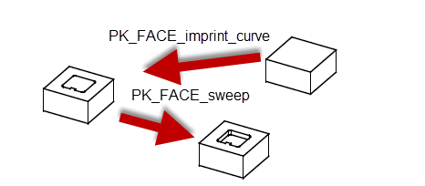Figure 63-7 Scribing and sweeping to create a pocket
PK_FACE_change is a powerful function that lets you combine the functionality of many of the operations already discussed into a single function call, taking care of all appropriate geometry changes in the process. Using PK_FACE_change, for example, you can offset some faces in a body, while tapering others in a single function call. Any blends are reapplied automatically, and other geometry and topology changes are handled appropriately.
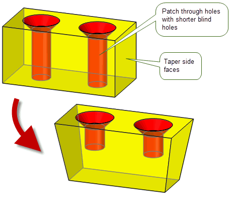Figure 63-8 Combining different model editing operations in a single call
PK_FACE_change can apply any of the following operations :
|
You can offset any face by a specified distance, either relatively from each changed face, or from the resultant position of an optional supplied reference face. This operation allows a subset of the functionality offered by PK_FACE_offset_2. See Section 63.2.1.2, for more information. |
|
|
If you want certain faces to remain offset from other faces during editing operations, you can specify the original (pre-offset) faces as reference faces. Parasolid then ensures that any faces offset from the reference faces continue to be offset by the same distance after the editing operation has completed. See Section 63.2.1.7 for more information. |
|
|
You can replace the surface of any face with a taper surface. See Section 63.2.1.3, for more information. |
|
|
You can transform the geometry of any face. You can also transform a set of faces in a manner very similar to patterning. See Section 63.2.1.1, for more information. |
|
|
You can replace the geometry of any face with a new surface. See Section 63.2.1.4, for more information. |
|
|
You can recalculate blends and reconstruct blend faces after moving other faces in a body. This operation may only be used on faces with blend surfaces. See Section 63.2.2, for more information. |
|
|
You can bend or unbend faces between two groups of faces that are being transformed. This functionality can be particularly useful for sheet metal bending operations. |
|
|
You can replace a set of target faces within a body with a set of tool faces from another body. This operation provides the same functionality as that offered by PK_FACE_replace_with_sheet. See Section 63.2.1.5, for more information. |
|
|
You can perform local deformation of a set of target faces in a body, by providing an evaluation function that maps three-space points on the target faces to deformed three-space points. See Section 63.2.1.5, for more information. |
PK_FACE_change is powerful enough that you can use it as the foundation of an entire suite of editing operations in your application. It is described in detail in Chapter 73, “Generic Face Editing”.
Parasolid provides comprehensive support for deleting entities in a body and healing the resulting wound to ensure that the model remains valid. The following table provides an overview of the most useful functionality:
|
Deletes an arbitrary set of faces from a body and heals the resulting wound. See Section 64.1, “Introduction”. |
|
|
Removes trimmed boundary features such as laminar and wire edges in order to simplify a model. This general purpose deleting function can heal gaps in the resulting model, making it particularly useful for simplification, and producing a model that is better suited, for example, to CAE operations. See Section 64.4, “Deleting edges”. |
|
|
Deletes a set of faces. Particularly useful when used in conjunction with PK_FACE_identify_blends to clean up a model: see Section 63.3.1, “Identifying and deleting blends”. See Section 64.5, “Deleting face sets”, for complete information. |
|
|
Removes a set of connected faces from a body and creates a new body from them. Any wounds that are left in either the original body or the new bodies are healed appropriately. See Section 72.2, “Removing faces to create new bodies”. |
|
|
Removes blend faces from a body. See Section 64.6, “Deleting blend faces”, for complete information. |
|
|
Removes a set of faces from a sheet. No healing is required when using this function. See Section 64.3.2, “Related functionality”, for more information. |
|
|
Deletes faces from a general body. See Section 15.9.3, “Deleting entities from general bodies”. |
This section describes other miscellaneous operations that are useful when editing models.
You can use PK_FACE_identify_blends to identify any constant-radius rolling ball blend created in Parasolid. In addition, it can identify faces which have the properties of a constant-radius rolling ball blend. For example, a B-surface, or even a variable-radius rolling-ball blend, may be correctly identified if its radius only varies along the extent of the blend within a specified tolerance.
PK_FACE_identify_blends lets you control properties of the blends to be found, allowing you, for example, to identify blends within a specific range of radii, or with a particular convexity. See Section 65.5, “Identifying blends”, for more information.
Once blend faces have been identified, you can remove them from the body with PK_FACE_delete_facesets (as introduced in Section 63.2.5, “Deleting entities”), healing the body as appropriate.
PK_FACE_delete_blends provides you with a more general way to remove blends from a body. You can think of PK_FACE_delete_blends as providing inverse behaviour to the various blend creation functions available in Parasolid. The faces do not need to be constant radius rolling ball blends; they can have a variable radius, or a cross-sectional plane that is not a rolling ball. You can even use this function to delete chamfer blends, for example. See Section 64.6, “Deleting blend faces”, for more information.
The combination of PK_FACE_identify_blends and PK_FACE_delete_facesets, together with PK_FACE_delete_blends, provides you with the means to remove unwanted blends from a model while ensuring the integrity of the model.
When cleaning up models, it is often very useful to be able to extend a sheet body. For example, if you have imported a model from another system, you may need to close gaps between the faces of the body: extending the faces until they intersect is often the best way of doing this. Alternatively, you may have special requirements when healing the wounds in an edited model that mean you cannot take advantage of any of the automated healing methods that Parasolid offers: extending faces can provide a simple solution.
You can use PK_BODY_extend to extend a sheet body along a laminar edge in a variety of ways. You can either extend the sheet by a specific distance, or until the extension hits a taget surface or body. See Section 49.1, “Extending sheets”, for more information.
One of the most common classes of operation when cleaning up a model involves covering holes or replacing existing faces. For example, you might need to fill a hole in a body, or replacing existing faces that you no longer wish to keep.
The most common type of covering operation is that of filling holes. PK_BODY_fill_hole is a powerful function that lets you fill holes in a model with a powerful range of controls. For some configurations, Parasolid can extend neighbouring faces to fill a hole. In others, you can supply a patch sheet yourself. The most common way of using PK_BODY_fill_hole, however, is to let Parasolid generate a patch sheet for you.
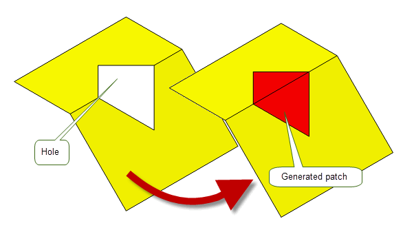Figure 63-9 Letting Parasolid generate a patch to fill a hole
PK_BODY_fill_hole contains a wide range of options to let you control the shape and topology of the resulting patch. See Chapter 70, “Filling Holes In A Body”, for more information.
If you have a body that contains rubber faces (that is, faces that have no geometry attached), you can use PK_FACE_attach_surf_fitting to automatically create a suitable planar surface (where one exists) and attach it to the face. See Section 69.5, “Attaching a surface to a face”, for complete information.
Parasolid can replace a patchwork of smoothly connected faces with a single replacement face, using PK_FACE_cover. This function can be particularly useful, for example, if you have imported a model from another system and this has resulted in the creation of a number of small faces. PK_FACE_cover lets you control the tolerance to which the replacement geometry is generated, as well as whether the boundary of the patch faces meets adjacent faces on the model smoothly. See Section 69.6, “Replacing a set of faces with a single face”, for more information.
As introduced in Section 63.2.5, “Deleting entities”, Parasolid also provides a range of functions for removing entities in a body. Most of these functions are typically used in situations other than cleaning up a model, but can be used for clean up purposes as well.
Performing a local operation on a body may leave that body in an invalid intermediate state (or, in some cases, a deliberately invalid end state, such as when you delete a set of faces from a solid body, leaving a rubber face that needs to be healed). As described in Section 63.2, “Editing models”, Parasolid can perform much of the healing required to fix these problems as part of the local operation call, adjusting the topology and managing entity tags as required. This section provides more examples of the broad classes of topological change that Parasolid’s local operations can handle.
A multi-edge vertex can be split, and a new edge introduced into the model.
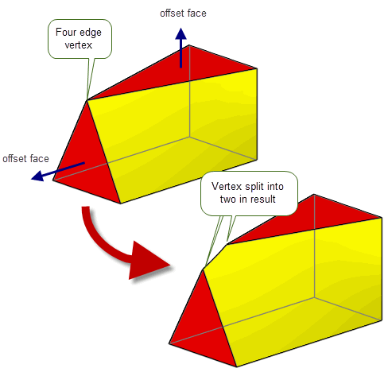Figure 63-10 Offset body where the four-edge vertex has been split into two vertices connected by an edge
A face may become self-intersecting in the sense that its edges cross.
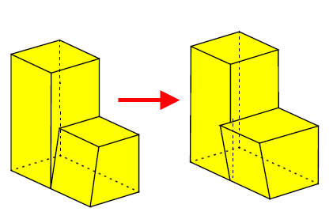Figure 63-11 Repair of body with self-intersecting faces
The operation causes faces to clash into each other. This condition typically is accompanied by one or more self-intersecting faces, as described previously. Often the repair involves the removal of faces.
Figure 63-12 shows how faces can clash into each other as a result of tapering operations. Parasolid is able to resolve this type of clash, splitting faces or creating new faces as required.
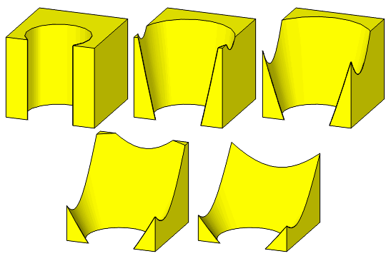Figure 63-12 Tapering the cylindrical face outwards with the bottom edge fixed
Figure 63-13 demonstrates how faces can clash into each other if a chamfer face is offset by a large enough distance. Parasolid is able to resolve this type of clash by removing the chamfer entirely.
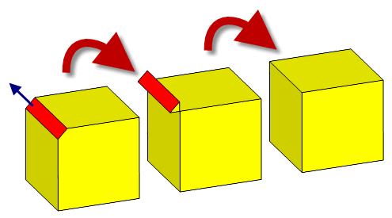Figure 63-13 Removal of clashing faces
An offset operation can cause faces to drift past each other. Repair involves the removal of faces or features, see Figure 63-14.
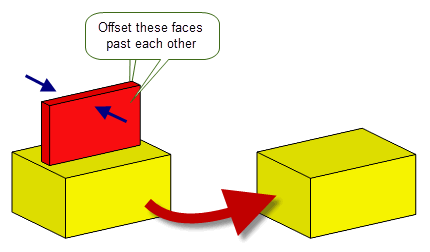Figure 63-14 Repairing mirrored faces by removing the offending entities
Offsetting a sheet body with a degeneracy, such as the cone shown in Figure 63-15, causes a new edge to be created, thereby changing the topology of the body.
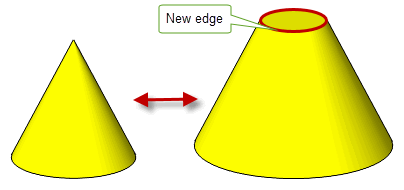Figure 63-15 This conical sheet body changes topology when offset
As well as the editing operations already discussed in this chapter, there are a number of other options and functional areas that are common across many of the functions discussed in this chapter.
Most local operations contain a
local_check
option that lets you perform consistency checks on any newly created topology and geometry. These checks tell you whether the body is still valid after the operation. Since they are faster to perform than whole body checks (as described in Chapter 31, “Checking”), you are strongly advised to use them whenever possible.
All Parasolid local operations provide an
update
option that you can use as a version switch. If your application relies on reproducing behaviour when updating models built using earlier versions of Parasolid, you should use this option to preserve old behaviour and help eliminate differences in rebuild results. The
update
option lets you disable some local operations enhancements that have been added at different Parasolid versions. Doing this ensures that local operations give the same results in the latest version of Parasolid as in earlier versions. See PK_local_ops_update_t in the
PK Interface Programming Reference Manual for more information on this
update
option.
|
Note: the default value is PK_local_ops_update_default_c which uses all appropriate local operations enhancements. Setting to a non-default value disables all appropriate local operations enhancements |
The rules for the persistence of tags described in Section 2.4.2, “Tags”, apply during local operations. However, tag persistence is disabled if normal attribute callbacks are registered and used. See Section 95.3, “Callback functions” for more information.
Parasolid local operations accept general bodies if the supplied set of faces to be edited are locally manifold (i.e. the face sets on the supplied general body must be manifold). Figure 63-16 illustrates this.
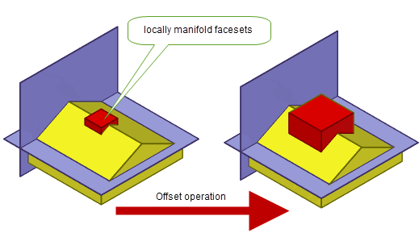Figure 63-16 Offset operation on locally manifold face sets
|
Note: Local operations on general bodies are not supported for bend or deform operations. |
| <<< Introduction To Model Editing | Chapters | Deleting Entities >>> |